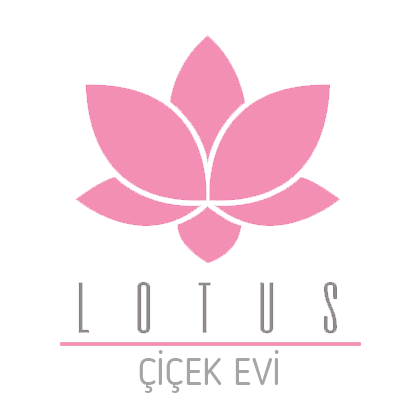
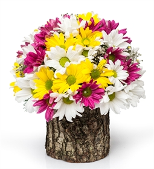
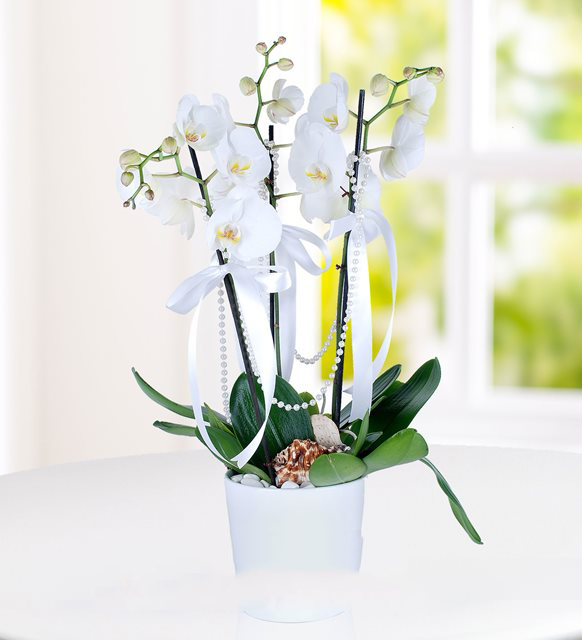

Ürünler

Renki Papatya
Papatya yalnızlığı sevmez, bu yüzden iki renklidir derler. Çoğu insan için bir bütündür papatya. Sarı ve beyaz rengin muhteşem uyumudur. Bazende rengarenk çıkar karşımıza
Devamını oku...

Saksıda Beyaz Orkideler
Beyaz orkide; kendine güven ve asaleti simgeler. Mağrur ve kendine güvenen görünüşüyle, büyüsüne kapıldığınız sevginiz için, onun güzelliğine yaraşır en güzel hediye. Sevgiliniz bu büyülü çiçeğin cazibesine kapılacak...
Devamını oku...
Kırmızı Gül Çiçek Demeti
Aşkınızı ifade etmeye bir buket kırmızı gül yeter! Kırmızı folyo ve beyaz file kağıdı sarılı, cipsolarla süslenmiş 50 adet kırmızı gülden oluşan Kucak Dolusu Aşk Buketi, biricik aşkınıza çok özel bir süpriz olucak...
Devamını oku...